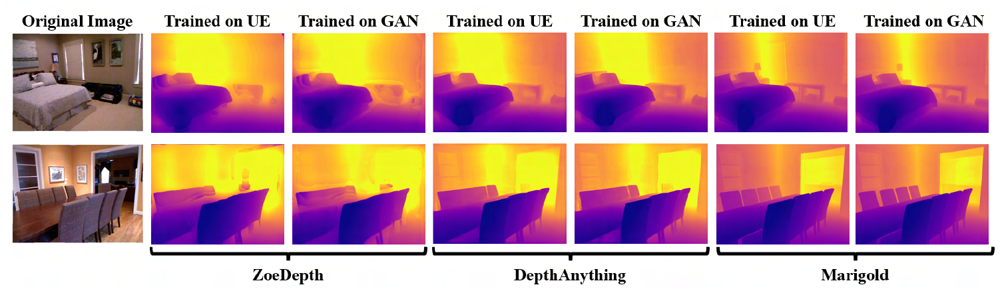
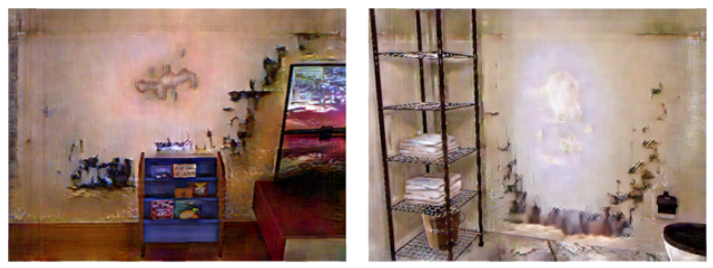

Domain-Transferred Synthetic Data Generation for Improving Monocular Depth Estimation
1 Drexel University · 2 Korea University
ICCAS 2025 · November 4–7, 2025 · Incheon, Korea
* Equal contribution (co-first authors) · † Corresponding author

Overview
CycleGAN translates 10,000 Unreal Engine indoor RGB images while retaining their simulated depth labels. ZoeDepth, DepthAnything, and Marigold are trained on the original (UE10k) and translated (GAN10k) datasets, then evaluated on the official NYU-Depth V2 test split. GAN10k yields small AbsRel reductions for all three models, with mixed changes in other metrics. CycleGAN training includes NYU test images, so the target domain is not entirely unseen. Domain transfer is used during data preparation, not inference.
From Synthetic Scenes to Depth Models
Accurate RGB–depth pairs are costly to collect in the real world. Simulation provides dense depth labels, but visual differences between rendered and real images can limit generalization. This work applies domain transfer to the training images, allowing the final depth model to run without an additional CycleGAN stage at inference.

1. Generate Paired RGB and Depth Data
Unreal Engine 4.27 and AirSim capture indoor apartment, living-room, bedroom, and kitchen scenes. RGB images use a 640 × 480 resolution and a 57° field of view. AirSim DepthPerspective values are saved as PFM files, clipped at 10 m, and converted to 16-bit PNG depth maps in millimeters to match the NYU-Depth V2 format.
2. Translate Synthetic RGB Images
CycleGAN learns unpaired synthetic-to-real translation. Its real-domain images are selected from NYU-Depth V2, House Rooms Image, House Rooms, and Position Image datasets to visually align with the synthetic scenes. The translated RGB images retain the corresponding simulated depth labels.
3. Train Three Depth Architectures
The study compares ZoeDepth, DepthAnything, and Marigold using the same synthetic scenes before and after domain transfer. ZoeDepth and DepthAnything predict metric depth; Marigold predicts affine-invariant depth, with an unknown scale and shift.
Experimental Setup
- UE10k
- 10,000 synthetic RGB–depth pairs from seven Unreal Engine environments.
- GAN10k
- The same 10,000 synthetic images translated by CycleGAN, paired with the simulated depth maps.
- Evaluation
- Official NYU-Depth V2 test split.
- Depth training
- 15 epochs for each architecture, with default parameters from its original work.
- CycleGAN training
- 200 epochs; learning rate 0.0001.
- Hardware
- AMD Ryzen Threadripper 3960X, 24 cores; two NVIDIA RTX 3090 GPUs.
Evaluation scope. The depth models are trained on UE10k or GAN10k. Section 4.3 notes that NYU test images were used for CycleGAN training. The evaluation therefore includes target-domain exposure in the translation stage and should not be interpreted as a completely unseen target-domain test.
Results on Real Indoor Images
Domain-transferred training data reduces absolute relative error (AbsRel) in all three architectures. The changes are modest, and individual metrics do not all improve. ZoeDepth’s δ₁ decreases slightly; DepthAnything’s δ₂, δ₃, and RMSElog worsen slightly; Marigold’s RMSE increases from 0.305 to 0.306.
UE10k → GAN10k. Lower AbsRel is better. Marigold’s affine-invariant task differs from the metric-depth task of ZoeDepth and DepthAnything, so these values should not be used to rank all three models directly.
| Model | Training data | δ₁ ↑ | δ₂ ↑ | δ₃ ↑ | AbsRel ↓ | RMSE ↓ | log₁₀ ↓ | RMSElog ↓ | SIlog ↓ | SqRel ↓ |
|---|---|---|---|---|---|---|---|---|---|---|
| ZoeDepth | UE10k | 0.408 | 0.633 | 0.766 | 0.320 | 0.811 | 0.203 | 0.639 | 46.07 | 0.308 |
| ZoeDepth | GAN10k | 0.406 | 0.642 | 0.777 | 0.313 | 0.803 | 0.195 | 0.606 | 43.02 | 0.297 |
| DepthAnything | UE10k | 0.440 | 0.654 | 0.761 | 0.321 | 0.812 | 0.212 | 0.706 | 55.43 | 0.317 |
| DepthAnything | GAN10k | 0.452 | 0.649 | 0.759 | 0.316 | 0.777 | 0.212 | 0.707 | 54.02 | 0.305 |
| Marigold | UE10k | 0.940 | 0.988 | 0.997 | 0.082 | 0.305 | 0.035 | 0.112 | 11.185 | 0.041 |
| Marigold | GAN10k | 0.943 | 0.988 | 0.997 | 0.079 | 0.306 | 0.034 | 0.109 | 10.850 | 0.041 |
δ₁, δ₂, and δ₃ are threshold accuracies. AbsRel: absolute relative error; RMSE: root mean square error; log₁₀: logarithmic error; RMSElog: log-space RMSE; SIlog: scale-invariant log error; SqRel: squared relative error. The two rows per model compare training on the same synthetic scenes before and after domain transfer.


Limitations and Next Steps
CycleGAN can introduce textures or colors that do not exist in the source scene. The study keeps these images to preserve dataset size and diversity, but such artifacts may limit the benefit of domain transfer. Filtering translated samples or incorporating semantic and depth constraints are proposed directions for improvement.


The synthetic data mainly covers indoor home environments. More varied objects, lighting, and environments could improve robustness. The reported gains concern training-data generalization on NYU-Depth V2; this study does not establish downstream robot-navigation or obstacle-avoidance performance.
My Role and Research Context
I worked on this research during my visiting appointment at Drexel University’s Intelligent Machine Perception and Learning (IMAPLE) Lab, advised by Prof. David Han, from September 2023 to February 2024.
- Applied CycleGAN-based domain transfer to generate realistic training images from synthetic scenes.
- Worked on monocular depth model training with domain-transferred synthetic data.
The paper credits Knut Peterson and me with equal contribution. The framework and results presented above are the shared research of all four authors.
BibTeX
@inproceedings{peterson2025domain,
title = {Domain-Transferred Synthetic Data Generation for Improving Monocular Depth Estimation},
author = {Peterson, Knut and Lee, Seungyeop and
Arezoomandan, Solmaz and Han, David},
booktitle = {2025 25th International Conference on
Control, Automation and Systems (ICCAS)},
year = {2025},
pages = {203--208}
}